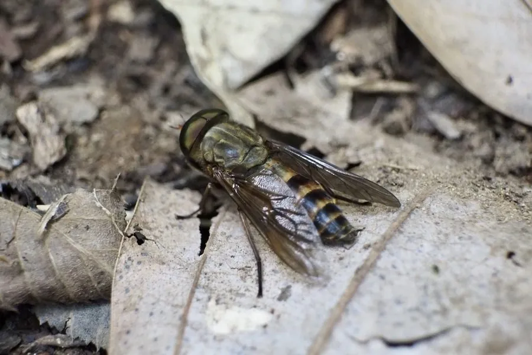

昆虫 · 动物界
三角牛虻 Tabanus trigonus

体长逾两厘米的粗壮虻类，翅透明、腹部有三角斑，雌虻猛烈吸血，可传播炭疽与锥虫病。
- 分类
- 门节肢动物门纲昆虫纲目双翅目科虻科属虻属
- 栖息环境
- 水田、沼泽边的草丛、畜舍与林间牧场
- 地理分布
- 中国南北各地及日本、朝鲜半岛
- 保护级别
- 常见吸血害虫，无保护需求
物种志
三角牛虻的成虫体长约二至二点五厘米，是体型较大的虻类。体灰黑至黑褐色，复眼大而呈暗绿色，胸背有浅色纵纹，腹部中央有一列三角形淡色斑，三角牛虻之名由此而来。翅透明，翅脉粗黑，口器为短粗的刺舐式，能割破皮肤形成血滴再舔食，被咬处往往流血不止、又痛又痒。
它分布于中国南北各地以及日本、朝鲜半岛，栖息在水田、沼泽边的草丛和畜舍附近。雌虻在夏季晴朗的中午最活跃，追逐牛马和人猛烈叮咬，雄虻只吸花蜜。幼虫生活在潮湿泥土和水边腐殖质中，捕食小虫，老熟后化蛹于土表。雌虻吸血时可机械传播炭疽、锥虫病和马的传染性贫血。防治以畜体涂药、诱虫灯和清除积水草丛为主。
形态与习性
- 体长约二至二点五厘米，体型粗壮
- 腹部中央一列三角形淡色斑
- 口器短粗刺舐式，可割破皮肤
- 习性雌虻夏日中午最活跃，穷追叮咬
- 幼虫生活在潮湿泥土中，捕食小虫
- 传播炭疽、锥虫病、马传染性贫血
趣味知识
- 它的口器像小刀，先划开皮肤让血流出来，再低头舔食。
- 雌虻追人极有耐心，围着头顶转圈，找准机会就落下猛咬一口。
- 它的幼虫在水边泥里吃小虫，长大后才变成空中凶猛的吸血者。